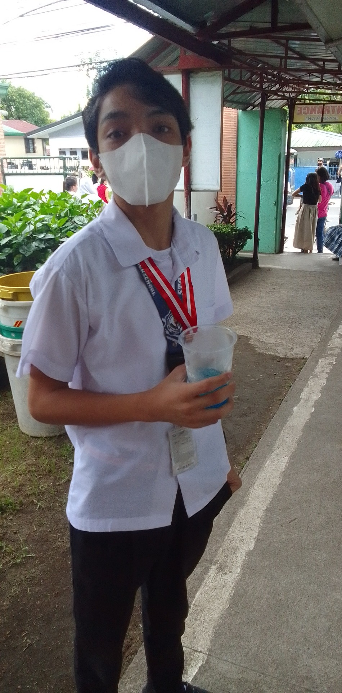
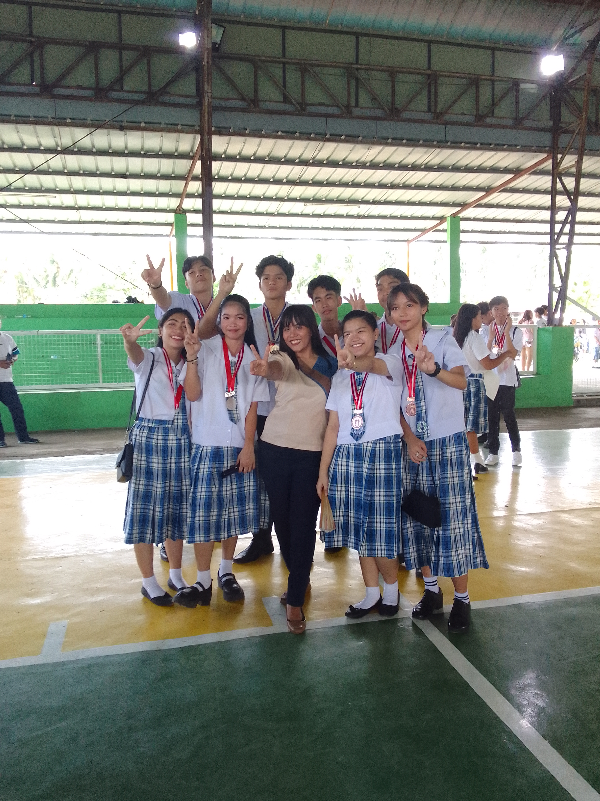
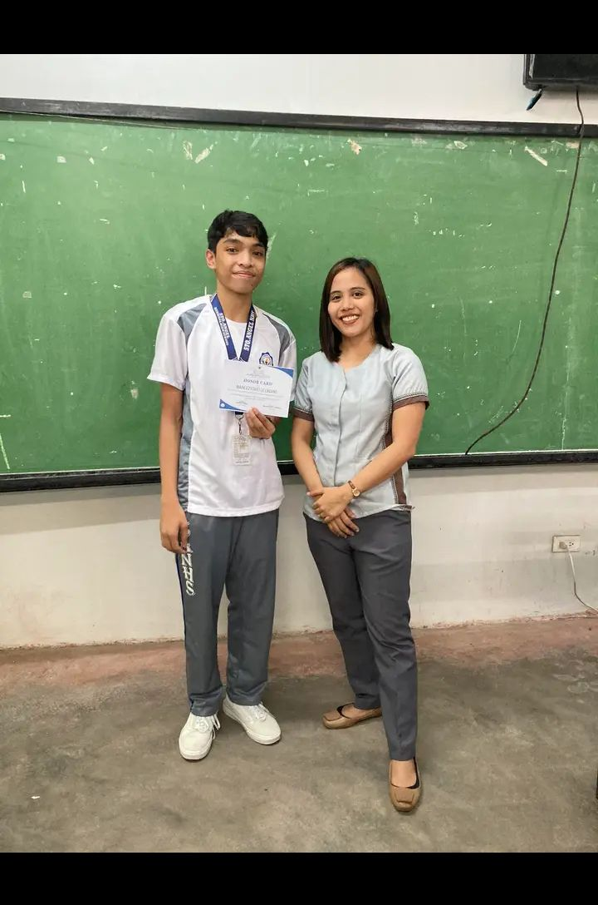
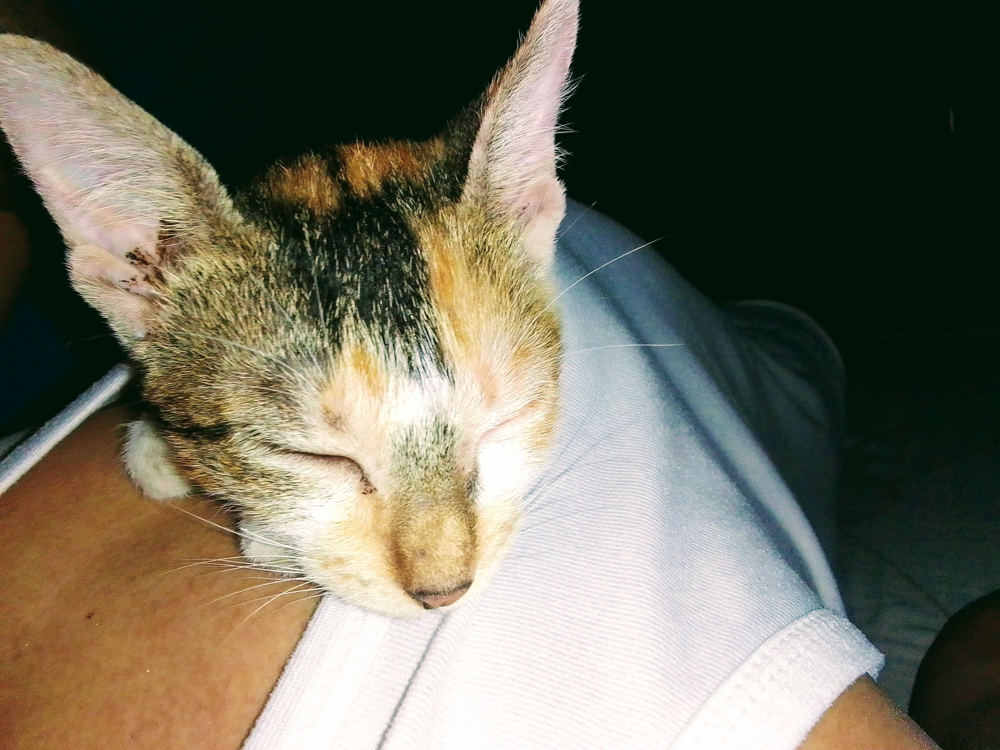
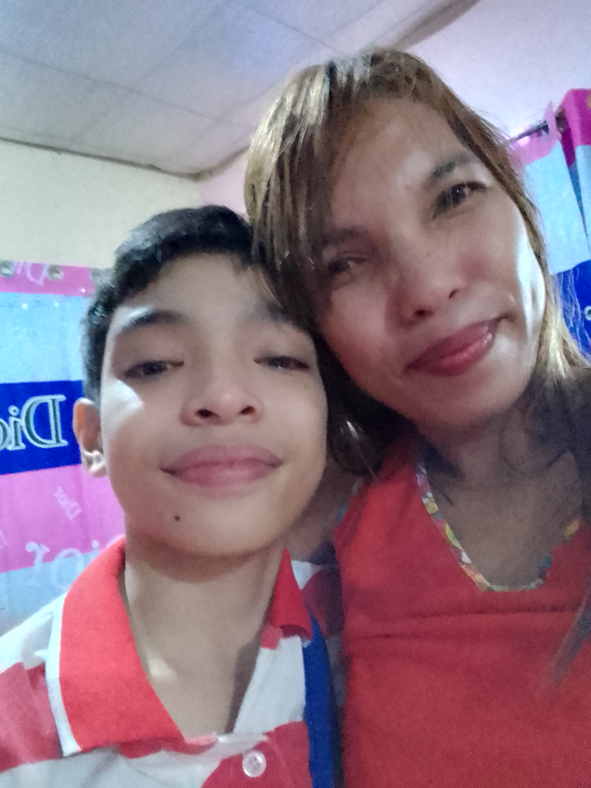

•My first recognition day at SANHS. 8th grade, Just recovered from long-quarantine because of the Pandemic caused by COVID-19.

•My last group picture with old friends of mine, It was a fun and thrilling year filled with laughter and teasing. Can't believe that one year would fly by so too fast that none of us didn't even noticed it until the 4th quarter arrives.

•Got my 3rd Quarter certificate from my adviser, lot of guys including me admires her so much, not just because she's beautiful and got the 'body', but because she's also kind and caring. Honestly, Grade 9 was the only grade level I found peaceful and not overwhelming, maybe luck was on my side those days.

•My first picture with my Kitty, she's only around 2-3 months when I captured this photo. I couldn't believe that I raised a small Stray kitten that my Classmate gave to me.

•The most unforgettable moment of my life. It was during Christmas, I've always felt left behind due to the fact that Im the only one who got no Cellphone or any kind of devices in the family, I could only watch and stare at them having fun. Until, my Mom surprised me with my very own Phone, I still remember I might have cried too much and even took a selfie because I was so happy and excited.